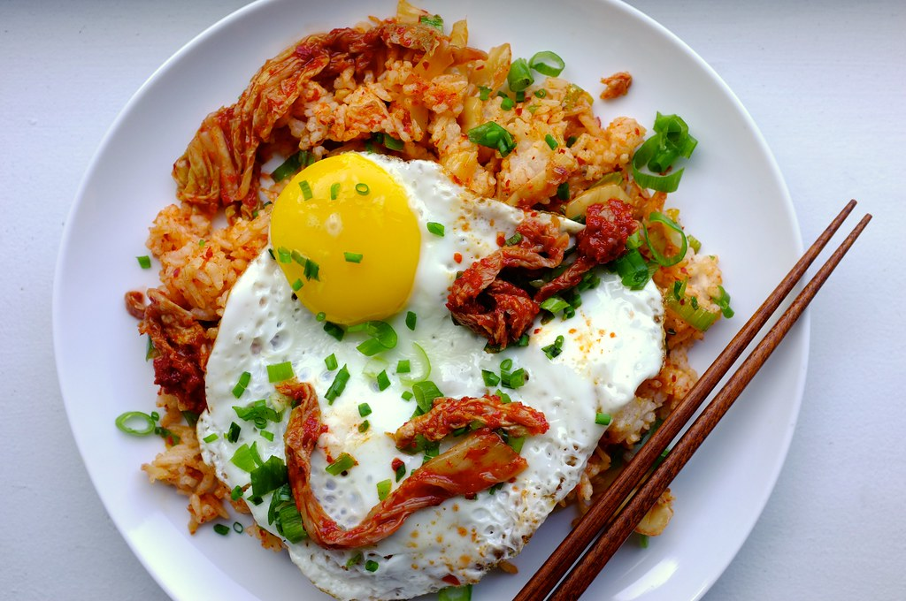

Kimchi Fried Rice

Description:
Kimchi fried rice combines multiple things that are my favorites.
Rice, kimchi, eggs, sesame seed oil. It is delicious and easy to make, like lot of my other recipes on here.
Ingredients:
- Rice
- Kimchi
- Sesame Seed Oil
- Egg
Steps:
- Make rice, day old rice is preferable
- Heat up wok with olive oil
- Add rice, garlic, sesame oil, soy sauce, and sautee
- Add kimchi
- Garnish with egg and nori.